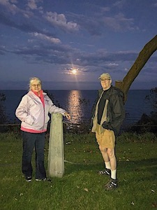

 OUR STORY TOGETHER continues with us in a beautiful neighborhood on the shore of Lake Michigan in Manitowoc, Wisconsin after living in Green Valley, Arizona and Denver, Colorado for most our lives. Getting here probably started to happen as we traveled the summer of 2015 to our summer cabin in Sterling, Alaska.
Donna and I lived in Colorado for most of our adult-lives, until moving to We have to admit living with 23,000 other retired people gets old, thus we welcomed the 10 day trips to and from Alaska. I'd traveled to and purchased considerable un-developed properties in Sterling between 2005 and 2008. Donna hadn't been there since we re-connected in 2011 - 2013 timeframe, so it was a welcome trip.
The Alaska adventures started for me (Dave) in 1996 - 1998 with two jobs up there. The 2nd one took me to Anchorage, Alaska as a project manager on a telecom billing system conversion for 5 months (June - October). While there in 1998 fishing took control of my off-times, and eventually wondered down to the Kenai Peninsula to fish Salmon on the Kenai River.
In 2012 nearing retirement and still in Colorado, I purchased a retirement home in Green Valley, Arizona (some of my family lived there at the time) and also focused on completing the cabin in Alaska and selling land.
| GitHub URL | On Github | Description |
|---|---|---|
| MyShopper App | Y | MyShopper Web-Based Personal Shopper |